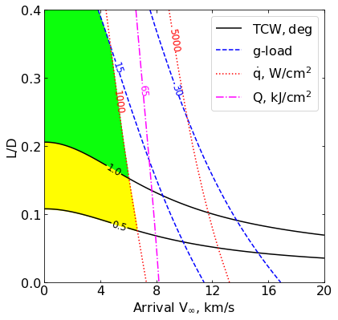
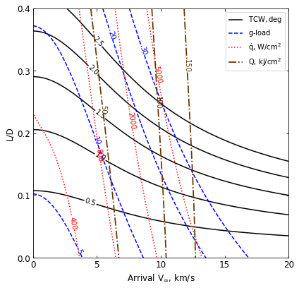

04 - a - Earth - Feasibility Charts - Lift¶
[1]:
from AMAT.planet import Planet
from AMAT.vehicle import Vehicle
import numpy as np
from scipy import interpolate
import matplotlib.pyplot as plt
from matplotlib import rcParams
from matplotlib.patches import Polygon
import os
[2]:
# Create a planet object
planet=Planet("EARTH")
planet.h_skip = 140000.0
# Load an nominal atmospheric profile with height, temp, pressure, density data
planet.loadAtmosphereModel('../atmdata/Earth/earth-gram-avg.dat', 0 , 1 ,2, 3 )
vinf_kms_array = np.linspace( 0.0, 20.0, 11)
LD_array = np.linspace( 0.0, 0.4 , 11)
[4]:
#os.makedirs('../data/jsr-paper/earth/')
[5]:
runID = 'earth-lift-'
num_total = len(vinf_kms_array)*len(LD_array)
count = 1
v0_kms_array = np.zeros(len(vinf_kms_array))
v0_kms_array[:] = np.sqrt(1.0*(vinf_kms_array[:]*1E3)**2.0 +\
2*np.ones(len(vinf_kms_array))*\
planet.GM/(planet.RP+140.0*1.0E3))/1.0E3
overShootLimit_array = np.zeros((len(v0_kms_array),len(LD_array)))
underShootLimit_array = np.zeros((len(v0_kms_array),len(LD_array)))
exitflag_os_array = np.zeros((len(v0_kms_array),len(LD_array)))
exitflag_us_array = np.zeros((len(v0_kms_array),len(LD_array)))
TCW_array = np.zeros((len(v0_kms_array),len(LD_array)))
[6]:
for i in range(0,len(v0_kms_array)):
for j in range(0,len(LD_array)):
vehicle=Vehicle('Apollo', 1000.0, 200.0, LD_array[j], 3.1416, 0.0, 1.00, planet)
vehicle.setInitialState(140.0,0.0,0.0,v0_kms_array[i],0.0,-4.5,0.0,0.0)
vehicle.setSolverParams(1E-5)
overShootLimit_array[i,j], exitflag_os_array[i,j] = vehicle.findOverShootLimit (2400.0, 1.0, -80.0, -4.0, 1E-10, 400.0)
underShootLimit_array[i,j], exitflag_us_array[i,j] = vehicle.findUnderShootLimit(2400.0, 1.0, -80.0, -4.0, 1E-10, 400.0)
TCW_array[i,j] = overShootLimit_array[i,j] - underShootLimit_array[i,j]
print("Run #"+str(count)+" of "+ str(num_total)+": Arrival V_infty: "+str(vinf_kms_array[i])+" km/s"+", L/D:"+str(LD_array[j]) + " OSL: "+str(overShootLimit_array[i,j])+" USL: "+str(underShootLimit_array[i,j])+", TCW: "+str(TCW_array[i,j])+" EFOS: "+str(exitflag_os_array[i,j])+ " EFUS: "+str(exitflag_us_array[i,j]))
count = count +1
np.savetxt('../data/jsr-paper/earth/'+runID+'vinf_kms_array.txt',vinf_kms_array)
np.savetxt('../data/jsr-paper/earth/'+runID+'v0_kms_array.txt',v0_kms_array)
np.savetxt('../data/jsr-paper/earth/'+runID+'LD_array.txt',LD_array)
np.savetxt('../data/jsr-paper/earth/'+runID+'overShootLimit_array.txt',overShootLimit_array)
np.savetxt('../data/jsr-paper/earth/'+runID+'exitflag_os_array.txt',exitflag_os_array)
np.savetxt('../data/jsr-paper/earth/'+runID+'undershootLimit_array.txt',underShootLimit_array)
np.savetxt('../data/jsr-paper/earth/'+runID+'exitflag_us_array.txt',exitflag_us_array)
np.savetxt('../data/jsr-paper/earth/'+runID+'TCW_array.txt',TCW_array)
Run #1 of 121: Arrival V_infty: 0.0 km/s, L/D:0.0 OSL: -6.620145675511594 USL: -6.620145675511594, TCW: 0.0 EFOS: 1.0 EFUS: 1.0
Run #2 of 121: Arrival V_infty: 0.0 km/s, L/D:0.04 OSL: -6.535040746584855 USL: -6.717427210802271, TCW: 0.18238646421741578 EFOS: 1.0 EFUS: 1.0
Run #3 of 121: Arrival V_infty: 0.0 km/s, L/D:0.08 OSL: -6.460754934396391 USL: -6.828386501645582, TCW: 0.367631567249191 EFOS: 1.0 EFUS: 1.0
Run #4 of 121: Arrival V_infty: 0.0 km/s, L/D:0.12 OSL: -6.3958453706 USL: -6.954470440025034, TCW: 0.5586250694250339 EFOS: 1.0 EFUS: 1.0
Run #5 of 121: Arrival V_infty: 0.0 km/s, L/D:0.16 OSL: -6.339003598979616 USL: -7.096812388441322, TCW: 0.7578087894617056 EFOS: 1.0 EFUS: 1.0
Run #6 of 121: Arrival V_infty: 0.0 km/s, L/D:0.2 OSL: -6.289097684257285 USL: -7.257632841228769, TCW: 0.968535156971484 EFOS: 1.0 EFUS: 1.0
Run #7 of 121: Arrival V_infty: 0.0 km/s, L/D:0.24 OSL: -6.244961058884655 USL: -7.43709261296317, TCW: 1.1921315540785145 EFOS: 1.0 EFUS: 1.0
Run #8 of 121: Arrival V_infty: 0.0 km/s, L/D:0.28 OSL: -6.205620871562132 USL: -7.638297838559083, TCW: 1.4326769669969508 EFOS: 1.0 EFUS: 1.0
Run #9 of 121: Arrival V_infty: 0.0 km/s, L/D:0.32 OSL: -6.1702598966767255 USL: -7.8617062901030295, TCW: 1.691446393426304 EFOS: 1.0 EFUS: 1.0
Run #10 of 121: Arrival V_infty: 0.0 km/s, L/D:0.36 OSL: -6.13818954895396 USL: -8.109902994579897, TCW: 1.9717134456259373 EFOS: 1.0 EFUS: 1.0
Run #11 of 121: Arrival V_infty: 0.0 km/s, L/D:0.4 OSL: -6.108461643965711 USL: -8.385344060767238, TCW: 2.276882416801527 EFOS: 1.0 EFUS: 1.0
Run #12 of 121: Arrival V_infty: 2.0 km/s, L/D:0.0 OSL: -6.719930741488497 USL: -6.719930741488497, TCW: 0.0 EFOS: 1.0 EFUS: 1.0
Run #13 of 121: Arrival V_infty: 2.0 km/s, L/D:0.04 OSL: -6.631194503017468 USL: -6.8218843346621725, TCW: 0.1906898316447041 EFOS: 1.0 EFUS: 1.0
Run #14 of 121: Arrival V_infty: 2.0 km/s, L/D:0.08 OSL: -6.553991805110854 USL: -6.938512184227875, TCW: 0.38452037911702064 EFOS: 1.0 EFUS: 1.0
Run #15 of 121: Arrival V_infty: 2.0 km/s, L/D:0.12 OSL: -6.48680584509566 USL: -7.071326802895783, TCW: 0.5845209578001231 EFOS: 1.0 EFUS: 1.0
Run #16 of 121: Arrival V_infty: 2.0 km/s, L/D:0.16 OSL: -6.428164286498941 USL: -7.2220515759509, TCW: 0.7938872894519591 EFOS: 1.0 EFUS: 1.0
Run #17 of 121: Arrival V_infty: 2.0 km/s, L/D:0.2 OSL: -6.376821463025408 USL: -7.392210360547324, TCW: 1.015388897521916 EFOS: 1.0 EFUS: 1.0
Run #18 of 121: Arrival V_infty: 2.0 km/s, L/D:0.24 OSL: -6.3315183038357645 USL: -7.583838565431506, TCW: 1.2523202615957416 EFOS: 1.0 EFUS: 1.0
Run #19 of 121: Arrival V_infty: 2.0 km/s, L/D:0.28 OSL: -6.291253621369833 USL: -7.79735554110448, TCW: 1.5061019197346468 EFOS: 1.0 EFUS: 1.0
Run #20 of 121: Arrival V_infty: 2.0 km/s, L/D:0.32 OSL: -6.255137316773471 USL: -8.03623867713759, TCW: 1.7811013603641186 EFOS: 1.0 EFUS: 1.0
Run #21 of 121: Arrival V_infty: 2.0 km/s, L/D:0.36 OSL: -6.222442257316288 USL: -8.301895102416893, TCW: 2.0794528451006045 EFOS: 1.0 EFUS: 1.0
Run #22 of 121: Arrival V_infty: 2.0 km/s, L/D:0.4 OSL: -6.192593855135783 USL: -8.59752645295157, TCW: 2.4049325978157867 EFOS: 1.0 EFUS: 1.0
Run #23 of 121: Arrival V_infty: 4.0 km/s, L/D:0.0 OSL: -6.981084052436927 USL: -6.981084052436927, TCW: 0.0 EFOS: 1.0 EFUS: 1.0
Run #24 of 121: Arrival V_infty: 4.0 km/s, L/D:0.04 OSL: -6.88212812580241 USL: -7.095923073011363, TCW: 0.2137949472089531 EFOS: 1.0 EFUS: 1.0
Run #25 of 121: Arrival V_infty: 4.0 km/s, L/D:0.08 OSL: -6.796939337586082 USL: -7.228798592230305, TCW: 0.43185925464422326 EFOS: 1.0 EFUS: 1.0
Run #26 of 121: Arrival V_infty: 4.0 km/s, L/D:0.12 OSL: -6.723549207963515 USL: -7.381589444943529, TCW: 0.658040236980014 EFOS: 1.0 EFUS: 1.0
Run #27 of 121: Arrival V_infty: 4.0 km/s, L/D:0.16 OSL: -6.660107876199618 USL: -7.556186452653492, TCW: 0.8960785764538741 EFOS: 1.0 EFUS: 1.0
Run #28 of 121: Arrival V_infty: 4.0 km/s, L/D:0.2 OSL: -6.6048902286238445 USL: -7.75510392493743, TCW: 1.1502136963135854 EFOS: 1.0 EFUS: 1.0
Run #29 of 121: Arrival V_infty: 4.0 km/s, L/D:0.24 OSL: -6.556550590979896 USL: -7.97994755567197, TCW: 1.423396964692074 EFOS: 1.0 EFUS: 1.0
Run #30 of 121: Arrival V_infty: 4.0 km/s, L/D:0.28 OSL: -6.513802942885377 USL: -8.23264839526746, TCW: 1.7188454523820837 EFOS: 1.0 EFUS: 1.0
Run #31 of 121: Arrival V_infty: 4.0 km/s, L/D:0.32 OSL: -6.47564721060553 USL: -8.51623688219479, TCW: 2.0405896715892595 EFOS: 1.0 EFUS: 1.0
Run #32 of 121: Arrival V_infty: 4.0 km/s, L/D:0.36 OSL: -6.441274020326091 USL: -8.832957256960071, TCW: 2.3916832366339804 EFOS: 1.0 EFUS: 1.0
Run #33 of 121: Arrival V_infty: 4.0 km/s, L/D:0.4 OSL: -6.410010820978641 USL: -9.18517941373284, TCW: 2.7751685927541985 EFOS: 1.0 EFUS: 1.0
Run #34 of 121: Arrival V_infty: 6.0 km/s, L/D:0.0 OSL: -7.321326657183818 USL: -7.321326657183818, TCW: 0.0 EFOS: 1.0 EFUS: 1.0
Run #35 of 121: Arrival V_infty: 6.0 km/s, L/D:0.04 OSL: -7.207362288652803 USL: -7.455826279641769, TCW: 0.24846399098896654 EFOS: 1.0 EFUS: 1.0
Run #36 of 121: Arrival V_infty: 6.0 km/s, L/D:0.08 OSL: -7.110758171766065 USL: -7.613416772048367, TCW: 0.5026586002823024 EFOS: 1.0 EFUS: 1.0
Run #37 of 121: Arrival V_infty: 6.0 km/s, L/D:0.12 OSL: -7.028718139878038 USL: -7.79747763652631, TCW: 0.768759496648272 EFOS: 1.0 EFUS: 1.0
Run #38 of 121: Arrival V_infty: 6.0 km/s, L/D:0.16 OSL: -6.958694075623498 USL: -8.010321739231586, TCW: 1.0516276636080875 EFOS: 1.0 EFUS: 1.0
Run #39 of 121: Arrival V_infty: 6.0 km/s, L/D:0.2 OSL: -6.898410006706399 USL: -8.254465622507269, TCW: 1.3560556158008694 EFOS: 1.0 EFUS: 1.0
Run #40 of 121: Arrival V_infty: 6.0 km/s, L/D:0.24 OSL: -6.845980806276202 USL: -8.533042435508833, TCW: 1.6870616292326304 EFOS: 1.0 EFUS: 1.0
Run #41 of 121: Arrival V_infty: 6.0 km/s, L/D:0.28 OSL: -6.799969627583778 USL: -8.848969342998316, TCW: 2.0489997154145385 EFOS: 1.0 EFUS: 1.0
Run #42 of 121: Arrival V_infty: 6.0 km/s, L/D:0.32 OSL: -6.7590978150838055 USL: -9.203332285083889, TCW: 2.444234470000083 EFOS: 1.0 EFUS: 1.0
Run #43 of 121: Arrival V_infty: 6.0 km/s, L/D:0.36 OSL: -6.722432925478643 USL: -9.602971674801665, TCW: 2.880538749323023 EFOS: 1.0 EFUS: 1.0
Run #44 of 121: Arrival V_infty: 6.0 km/s, L/D:0.4 OSL: -6.689245448393194 USL: -10.05130283426115, TCW: 3.3620573858679563 EFOS: 1.0 EFUS: 1.0
Run #45 of 121: Arrival V_infty: 8.0 km/s, L/D:0.0 OSL: -7.668405844386143 USL: -7.668405844386143, TCW: 0.0 EFOS: 1.0 EFUS: 1.0
Run #46 of 121: Arrival V_infty: 8.0 km/s, L/D:0.04 OSL: -7.5364151427857 USL: -7.827106381675549, TCW: 0.29069123888984905 EFOS: 1.0 EFUS: 1.0
Run #47 of 121: Arrival V_infty: 8.0 km/s, L/D:0.08 OSL: -7.426677027764526 USL: -8.016525774604816, TCW: 0.5898487468402891 EFOS: 1.0 EFUS: 1.0
Run #48 of 121: Arrival V_infty: 8.0 km/s, L/D:0.12 OSL: -7.335081847242691 USL: -8.24040653837801, TCW: 0.9053246911353199 EFOS: 1.0 EFUS: 1.0
Run #49 of 121: Arrival V_infty: 8.0 km/s, L/D:0.16 OSL: -7.257983865514689 USL: -8.5028392993554, TCW: 1.244855433840712 EFOS: 1.0 EFUS: 1.0
Run #50 of 121: Arrival V_infty: 8.0 km/s, L/D:0.2 OSL: -7.192355294646404 USL: -8.806054570562992, TCW: 1.6136992759165878 EFOS: 1.0 EFUS: 1.0
Run #51 of 121: Arrival V_infty: 8.0 km/s, L/D:0.24 OSL: -7.135762690555566 USL: -9.155081794669968, TCW: 2.019319104114402 EFOS: 1.0 EFUS: 1.0
Run #52 of 121: Arrival V_infty: 8.0 km/s, L/D:0.28 OSL: -7.08631520457493 USL: -9.552104855756625, TCW: 2.4657896511816944 EFOS: 1.0 EFUS: 1.0
Run #53 of 121: Arrival V_infty: 8.0 km/s, L/D:0.32 OSL: -7.042661710136599 USL: -10.003175081270456, TCW: 2.9605133711338567 EFOS: 1.0 EFUS: 1.0
Run #54 of 121: Arrival V_infty: 8.0 km/s, L/D:0.36 OSL: -7.003626942052506 USL: -10.513781151068542, TCW: 3.5101542090160365 EFOS: 1.0 EFUS: 1.0
Run #55 of 121: Arrival V_infty: 8.0 km/s, L/D:0.4 OSL: -6.968386707390891 USL: -11.086914716797764, TCW: 4.118528009406873 EFOS: 1.0 EFUS: 1.0
Run #56 of 121: Arrival V_infty: 10.0 km/s, L/D:0.0 OSL: -7.98226909638106 USL: -7.98226909638106, TCW: 0.0 EFOS: 1.0 EFUS: 1.0
Run #57 of 121: Arrival V_infty: 10.0 km/s, L/D:0.04 OSL: -7.830857172255492 USL: -8.167782827782503, TCW: 0.33692565552701126 EFOS: 1.0 EFUS: 1.0
Run #58 of 121: Arrival V_infty: 10.0 km/s, L/D:0.08 OSL: -7.707500585340313 USL: -8.39305249570316, TCW: 0.6855519103628467 EFOS: 1.0 EFUS: 1.0
Run #59 of 121: Arrival V_infty: 10.0 km/s, L/D:0.12 OSL: -7.606469362235657 USL: -8.663461269683467, TCW: 1.0569919074478094 EFOS: 1.0 EFUS: 1.0
Run #60 of 121: Arrival V_infty: 10.0 km/s, L/D:0.16 OSL: -7.522627649923379 USL: -8.983198488083872, TCW: 1.4605708381604927 EFOS: 1.0 EFUS: 1.0
Run #61 of 121: Arrival V_infty: 10.0 km/s, L/D:0.2 OSL: -7.452015178394504 USL: -9.356498290911986, TCW: 1.9044831125174824 EFOS: 1.0 EFUS: 1.0
Run #62 of 121: Arrival V_infty: 10.0 km/s, L/D:0.24 OSL: -7.391589051461779 USL: -9.78800825822691, TCW: 2.396419206765131 EFOS: 1.0 EFUS: 1.0
Run #63 of 121: Arrival V_infty: 10.0 km/s, L/D:0.28 OSL: -7.339083175273117 USL: -10.28406505426392, TCW: 2.944981878990802 EFOS: 1.0 EFUS: 1.0
Run #64 of 121: Arrival V_infty: 10.0 km/s, L/D:0.32 OSL: -7.292834028961806 USL: -10.84875742375516, TCW: 3.5559233947933535 EFOS: 1.0 EFUS: 1.0
Run #65 of 121: Arrival V_infty: 10.0 km/s, L/D:0.36 OSL: -7.251671176865784 USL: -11.489106022043416, TCW: 4.237434845177631 EFOS: 1.0 EFUS: 1.0
Run #66 of 121: Arrival V_infty: 10.0 km/s, L/D:0.4 OSL: -7.214581508364063 USL: -12.215216221229639, TCW: 5.000634712865576 EFOS: 1.0 EFUS: 1.0
Run #67 of 121: Arrival V_infty: 12.0 km/s, L/D:0.0 OSL: -8.249267919069098 USL: -8.249267919069098, TCW: 0.0 EFOS: 1.0 EFUS: 1.0
Run #68 of 121: Arrival V_infty: 12.0 km/s, L/D:0.04 OSL: -8.078269082488987 USL: -8.462901896040421, TCW: 0.3846328135514341 EFOS: 1.0 EFUS: 1.0
Run #69 of 121: Arrival V_infty: 12.0 km/s, L/D:0.08 OSL: -7.941671056625637 USL: -8.726857708144962, TCW: 0.7851866515193251 EFOS: 1.0 EFUS: 1.0
Run #70 of 121: Arrival V_infty: 12.0 km/s, L/D:0.12 OSL: -7.831757666444901 USL: -9.047326054296718, TCW: 1.2155683878518175 EFOS: 1.0 EFUS: 1.0
Run #71 of 121: Arrival V_infty: 12.0 km/s, L/D:0.16 OSL: -7.741896248709963 USL: -9.42979029523849, TCW: 1.6878940465285268 EFOS: 1.0 EFUS: 1.0
Run #72 of 121: Arrival V_infty: 12.0 km/s, L/D:0.2 OSL: -7.666948549947847 USL: -9.881045722257113, TCW: 2.214097172309266 EFOS: 1.0 EFUS: 1.0
Run #73 of 121: Arrival V_infty: 12.0 km/s, L/D:0.24 OSL: -7.603219026190345 USL: -10.40589183611155, TCW: 2.802672809921205 EFOS: 1.0 EFUS: 1.0
Run #74 of 121: Arrival V_infty: 12.0 km/s, L/D:0.28 OSL: -7.548103305944096 USL: -11.009601842659322, TCW: 3.461498536715226 EFOS: 1.0 EFUS: 1.0
Run #75 of 121: Arrival V_infty: 12.0 km/s, L/D:0.32 OSL: -7.499689912376198 USL: -11.699545976473019, TCW: 4.199856064096821 EFOS: 1.0 EFUS: 1.0
Run #76 of 121: Arrival V_infty: 12.0 km/s, L/D:0.36 OSL: -7.45670631743269 USL: -12.484441334996518, TCW: 5.027735017563828 EFOS: 1.0 EFUS: 1.0
Run #77 of 121: Arrival V_infty: 12.0 km/s, L/D:0.4 OSL: -7.418034004756919 USL: -13.228094327878352, TCW: 5.810060323121434 EFOS: 1.0 EFUS: 1.0
Run #78 of 121: Arrival V_infty: 14.0 km/s, L/D:0.0 OSL: -8.47005867869666 USL: -8.47005867869666, TCW: 0.0 EFOS: 1.0 EFUS: 1.0
Run #79 of 121: Arrival V_infty: 14.0 km/s, L/D:0.04 OSL: -8.27986672701445 USL: -8.712213679664274, TCW: 0.4323469526498229 EFOS: 1.0 EFUS: 1.0
Run #80 of 121: Arrival V_infty: 14.0 km/s, L/D:0.08 OSL: -8.13087684093989 USL: -9.015557768783765, TCW: 0.8846809278438741 EFOS: 1.0 EFUS: 1.0
Run #81 of 121: Arrival V_infty: 14.0 km/s, L/D:0.12 OSL: -8.012987801543204 USL: -9.388184479252232, TCW: 1.3751966777090274 EFOS: 1.0 EFUS: 1.0
Run #82 of 121: Arrival V_infty: 14.0 km/s, L/D:0.16 OSL: -7.917878474312602 USL: -9.838167562080343, TCW: 1.9202890877677419 EFOS: 1.0 EFUS: 1.0
Run #83 of 121: Arrival V_infty: 14.0 km/s, L/D:0.2 OSL: -7.839266725455673 USL: -10.371067781965394, TCW: 2.531801056509721 EFOS: 1.0 EFUS: 1.0
Run #84 of 121: Arrival V_infty: 14.0 km/s, L/D:0.24 OSL: -7.77280085903476 USL: -10.99364205402162, TCW: 3.2208411949868605 EFOS: 1.0 EFUS: 1.0
Run #85 of 121: Arrival V_infty: 14.0 km/s, L/D:0.28 OSL: -7.715515003063047 USL: -11.711703886758187, TCW: 3.9961888836951402 EFOS: 1.0 EFUS: 1.0
Run #86 of 121: Arrival V_infty: 14.0 km/s, L/D:0.32 OSL: -7.665435677528876 USL: -12.534340315924055, TCW: 4.868904638395179 EFOS: 1.0 EFUS: 1.0
Run #87 of 121: Arrival V_infty: 14.0 km/s, L/D:0.36 OSL: -7.620822502012743 USL: -13.330716663243948, TCW: 5.709894161231205 EFOS: 1.0 EFUS: 1.0
Run #88 of 121: Arrival V_infty: 14.0 km/s, L/D:0.4 OSL: -7.580909455282381 USL: -14.17892676486008, TCW: 6.598017309577699 EFOS: 1.0 EFUS: 1.0
Run #89 of 121: Arrival V_infty: 16.0 km/s, L/D:0.0 OSL: -8.650760881697352 USL: -8.650760881697352, TCW: 0.0 EFOS: 1.0 EFUS: 1.0
Run #90 of 121: Arrival V_infty: 16.0 km/s, L/D:0.04 OSL: -8.442153188676457 USL: -8.92070073863215, TCW: 0.4785475499556924 EFOS: 1.0 EFUS: 1.0
Run #91 of 121: Arrival V_infty: 16.0 km/s, L/D:0.08 OSL: -8.281785105016752 USL: -9.26363566512373, TCW: 0.9818505601069774 EFOS: 1.0 EFUS: 1.0
Run #92 of 121: Arrival V_infty: 16.0 km/s, L/D:0.12 OSL: -8.156875138214673 USL: -9.690786391671281, TCW: 1.5339112534566084 EFOS: 1.0 EFUS: 1.0
Run #93 of 121: Arrival V_infty: 16.0 km/s, L/D:0.16 OSL: -8.057274884380604 USL: -10.209691394953552, TCW: 2.152416510572948 EFOS: 1.0 EFUS: 1.0
Run #94 of 121: Arrival V_infty: 16.0 km/s, L/D:0.2 OSL: -7.975609327870188 USL: -10.826399475332437, TCW: 2.8507901474622486 EFOS: 1.0 EFUS: 1.0
Run #95 of 121: Arrival V_infty: 16.0 km/s, L/D:0.24 OSL: -7.906897581931844 USL: -11.549786252548074, TCW: 3.6428886706162302 EFOS: 1.0 EFUS: 1.0
Run #96 of 121: Arrival V_infty: 16.0 km/s, L/D:0.28 OSL: -7.847870547047933 USL: -12.387684264525888, TCW: 4.539813717477955 EFOS: 1.0 EFUS: 1.0
Run #97 of 121: Arrival V_infty: 16.0 km/s, L/D:0.32 OSL: -7.7962798802764155 USL: -13.243740370613523, TCW: 5.447460490337107 EFOS: 1.0 EFUS: 1.0
Run #98 of 121: Arrival V_infty: 16.0 km/s, L/D:0.36 OSL: -7.750544747945241 USL: -14.139378646985278, TCW: 6.388833899040037 EFOS: 1.0 EFUS: 1.0
Run #99 of 121: Arrival V_infty: 16.0 km/s, L/D:0.4 OSL: -7.7096054264548 USL: -15.0928672417067, TCW: 7.383261815251899 EFOS: 1.0 EFUS: 1.0
Run #100 of 121: Arrival V_infty: 18.0 km/s, L/D:0.0 OSL: -8.798424121723656 USL: -8.798424121723656, TCW: 0.0 EFOS: 1.0 EFUS: 1.0
Run #101 of 121: Arrival V_infty: 18.0 km/s, L/D:0.04 OSL: -8.572566226521303 USL: -9.095263991846878, TCW: 0.5226977653255744 EFOS: 1.0 EFUS: 1.0
Run #102 of 121: Arrival V_infty: 18.0 km/s, L/D:0.08 OSL: -8.401815629720659 USL: -9.478020334921894, TCW: 1.076204705201235 EFOS: 1.0 EFUS: 1.0
Run #103 of 121: Arrival V_infty: 18.0 km/s, L/D:0.12 OSL: -8.270795504351554 USL: -9.959156363725924, TCW: 1.6883608593743702 EFOS: 1.0 EFUS: 1.0
Run #104 of 121: Arrival V_infty: 18.0 km/s, L/D:0.16 OSL: -8.167395869182656 USL: -10.546975884401036, TCW: 2.37958001521838 EFOS: 1.0 EFUS: 1.0
Run #105 of 121: Arrival V_infty: 18.0 km/s, L/D:0.2 OSL: -8.08319677063264 USL: -11.249256912655255, TCW: 3.1660601420226158 EFOS: 1.0 EFUS: 1.0
Run #106 of 121: Arrival V_infty: 18.0 km/s, L/D:0.24 OSL: -8.012665864869632 USL: -12.075754800986033, TCW: 4.063088936116401 EFOS: 1.0 EFUS: 1.0
Run #107 of 121: Arrival V_infty: 18.0 km/s, L/D:0.28 OSL: -7.952213297197886 USL: -12.982532037698547, TCW: 5.030318740500661 EFOS: 1.0 EFUS: 1.0
Run #108 of 121: Arrival V_infty: 18.0 km/s, L/D:0.32 OSL: -7.8994770556601 USL: -13.9139684998554, TCW: 6.014491444195301 EFOS: 1.0 EFUS: 1.0
Run #109 of 121: Arrival V_infty: 18.0 km/s, L/D:0.36 OSL: -7.852789261687576 USL: -14.909576674806885, TCW: 7.056787413119309 EFOS: 1.0 EFUS: 1.0
Run #110 of 121: Arrival V_infty: 18.0 km/s, L/D:0.4 OSL: -7.811023971255054 USL: -15.96272197808139, TCW: 8.151698006826336 EFOS: 1.0 EFUS: 1.0
Run #111 of 121: Arrival V_infty: 20.0 km/s, L/D:0.0 OSL: -8.919610838409426 USL: -8.919610838409426, TCW: 0.0 EFOS: 1.0 EFUS: 1.0
Run #112 of 121: Arrival V_infty: 20.0 km/s, L/D:0.04 OSL: -8.677689588850626 USL: -9.242411942945182, TCW: 0.5647223540945561 EFOS: 1.0 EFUS: 1.0
Run #113 of 121: Arrival V_infty: 20.0 km/s, L/D:0.08 OSL: -8.497580736424425 USL: -9.664761000043654, TCW: 1.1671802636192297 EFOS: 1.0 EFUS: 1.0
Run #114 of 121: Arrival V_infty: 20.0 km/s, L/D:0.12 OSL: -8.361249250698165 USL: -10.199463703062065, TCW: 1.8382144523639 EFOS: 1.0 EFUS: 1.0
Run #115 of 121: Arrival V_infty: 20.0 km/s, L/D:0.16 OSL: -8.254648856673157 USL: -10.855854135941627, TCW: 2.60120527926847 EFOS: 1.0 EFUS: 1.0
Run #116 of 121: Arrival V_infty: 20.0 km/s, L/D:0.2 OSL: -8.168350669100619 USL: -11.644615649474872, TCW: 3.4762649803742534 EFOS: 1.0 EFUS: 1.0
Run #117 of 121: Arrival V_infty: 20.0 km/s, L/D:0.24 OSL: -8.096331028387795 USL: -12.573065239052085, TCW: 4.47673421066429 EFOS: 1.0 EFUS: 1.0
Run #118 of 121: Arrival V_infty: 20.0 km/s, L/D:0.28 OSL: -8.03473959026087 USL: -13.525573590541171, TCW: 5.4908340002803016 EFOS: 1.0 EFUS: 1.0
Run #119 of 121: Arrival V_infty: 20.0 km/s, L/D:0.32 OSL: -7.981077174339589 USL: -14.548643576490576, TCW: 6.567566402150987 EFOS: 1.0 EFUS: 1.0
Run #120 of 121: Arrival V_infty: 20.0 km/s, L/D:0.36 OSL: -7.933630145493225 USL: -15.639545474081388, TCW: 7.705915328588162 EFOS: 1.0 EFUS: 1.0
Run #121 of 121: Arrival V_infty: 20.0 km/s, L/D:0.4 OSL: -7.891160102451977 USL: -16.790053904609522, TCW: 8.898893802157545 EFOS: 1.0 EFUS: 1.0
[7]:
acc_net_g_max_array = np.zeros((len(v0_kms_array),len(LD_array)))
stag_pres_atm_max_array = np.zeros((len(v0_kms_array),len(LD_array)))
q_stag_total_max_array = np.zeros((len(v0_kms_array),len(LD_array)))
heatload_max_array = np.zeros((len(v0_kms_array),len(LD_array)))
for i in range(0,len(v0_kms_array)):
for j in range(0,len(LD_array)):
vehicle=Vehicle('Apollo', 1000.0, 200.0, LD_array[j], 3.1416, 0.0, 1.00, planet)
vehicle.setInitialState(140.0,0.0,0.0,v0_kms_array[i],0.0,overShootLimit_array[i,j],0.0,0.0)
vehicle.setSolverParams(1E-5)
vehicle.propogateEntry (2400.0, 1.0, 180.0)
# Extract and save variables to plot
t_min_os = vehicle.t_minc
h_km_os = vehicle.h_kmc
acc_net_g_os = vehicle.acc_net_g
q_stag_con_os = vehicle.q_stag_con
q_stag_rad_os = vehicle.q_stag_rad
rc_os = vehicle.rc
vc_os = vehicle.vc
stag_pres_atm_os = vehicle.computeStagPres(rc_os,vc_os)/(1.01325E5)
heatload_os = vehicle.heatload
vehicle=Vehicle('Apollo', 1000.0, 200.0, LD_array[j], 3.1416, 0.0, 1.00, planet)
vehicle.setInitialState(140.0,0.0,0.0,v0_kms_array[i],0.0,underShootLimit_array[i,j],0.0,0.0)
vehicle.setSolverParams(1E-5)
vehicle.propogateEntry (2400.0, 1.0, 0.0)
# Extract and save variable to plot
t_min_us = vehicle.t_minc
h_km_us = vehicle.h_kmc
acc_net_g_us = vehicle.acc_net_g
q_stag_con_us = vehicle.q_stag_con
q_stag_rad_us = vehicle.q_stag_rad
rc_us = vehicle.rc
vc_us = vehicle.vc
stag_pres_atm_us = vehicle.computeStagPres(rc_us,vc_us)/(1.01325E5)
heatload_us = vehicle.heatload
q_stag_total_os = q_stag_con_os + q_stag_rad_os
q_stag_total_us = q_stag_con_us + q_stag_rad_us
acc_net_g_max_array[i,j] = max(max(acc_net_g_os),max(acc_net_g_us))
stag_pres_atm_max_array[i,j] = max(max(stag_pres_atm_os),max(stag_pres_atm_os))
q_stag_total_max_array[i,j] = max(max(q_stag_total_os),max(q_stag_total_us))
heatload_max_array[i,j] = max(max(heatload_os),max(heatload_os))
print("V_infty: "+str(vinf_kms_array[i])+" km/s"+", L/D: "+str(LD_array[j])+" G_MAX: "+str(acc_net_g_max_array[i,j])+" QDOT_MAX: "+str(q_stag_total_max_array[i,j])+" J_MAX: "+str(heatload_max_array[i,j])+" STAG. PRES: "+str(stag_pres_atm_max_array[i,j]))
np.savetxt('../data/jsr-paper/earth/'+runID+'acc_net_g_max_array.txt',acc_net_g_max_array)
np.savetxt('../data/jsr-paper/earth/'+runID+'stag_pres_atm_max_array.txt',stag_pres_atm_max_array)
np.savetxt('../data/jsr-paper/earth/'+runID+'q_stag_total_max_array.txt',q_stag_total_max_array)
np.savetxt('../data/jsr-paper/earth/'+runID+'heatload_max_array.txt',heatload_max_array)
V_infty: 0.0 km/s, L/D: 0.0 G_MAX: 3.8442174578118227 QDOT_MAX: 285.7546109416119 J_MAX: 27093.237121927777 STAG. PRES: 0.0745144124363312
V_infty: 0.0 km/s, L/D: 0.04 G_MAX: 4.253276250941478 QDOT_MAX: 302.0251504864408 J_MAX: 28099.41150789806 STAG. PRES: 0.06746954114851204
V_infty: 0.0 km/s, L/D: 0.08 G_MAX: 4.714241331112608 QDOT_MAX: 319.7045883342328 J_MAX: 29152.78231749199 STAG. PRES: 0.061203631473746856
V_infty: 0.0 km/s, L/D: 0.12 G_MAX: 5.230618190057675 QDOT_MAX: 338.76985815198606 J_MAX: 30233.08389497681 STAG. PRES: 0.055689690721382294
V_infty: 0.0 km/s, L/D: 0.16 G_MAX: 5.804742425292187 QDOT_MAX: 359.08429506049185 J_MAX: 31335.82799354548 STAG. PRES: 0.05086728341447316
V_infty: 0.0 km/s, L/D: 0.2 G_MAX: 6.438848444405146 QDOT_MAX: 380.9396111443384 J_MAX: 32451.99599863324 STAG. PRES: 0.046681893111492796
V_infty: 0.0 km/s, L/D: 0.24 G_MAX: 7.134016854684438 QDOT_MAX: 403.9593367196527 J_MAX: 33573.425103402966 STAG. PRES: 0.043017046021843176
V_infty: 0.0 km/s, L/D: 0.28 G_MAX: 7.9057411797614074 QDOT_MAX: 428.62470089519456 J_MAX: 34682.46719533342 STAG. PRES: 0.03980894651600455
V_infty: 0.0 km/s, L/D: 0.32 G_MAX: 8.753578279249654 QDOT_MAX: 454.22124279949276 J_MAX: 35785.68432554481 STAG. PRES: 0.037000077611295756
V_infty: 0.0 km/s, L/D: 0.36 G_MAX: 9.691902729300185 QDOT_MAX: 482.03831702554714 J_MAX: 36865.693068329616 STAG. PRES: 0.0345380491397446
V_infty: 0.0 km/s, L/D: 0.4 G_MAX: 10.724971487993527 QDOT_MAX: 511.18121941389575 J_MAX: 37932.31170107399 STAG. PRES: 0.032376735965990666
V_infty: 2.0 km/s, L/D: 0.0 G_MAX: 4.146233469952442 QDOT_MAX: 318.42193815726876 J_MAX: 28671.66205977635 STAG. PRES: 0.08036661459831329
V_infty: 2.0 km/s, L/D: 0.04 G_MAX: 4.601416972516434 QDOT_MAX: 337.880305751566 J_MAX: 29740.96183818748 STAG. PRES: 0.07257814068039375
V_infty: 2.0 km/s, L/D: 0.08 G_MAX: 5.114972717854862 QDOT_MAX: 359.2372202271179 J_MAX: 30852.329270229082 STAG. PRES: 0.06566504127105141
V_infty: 2.0 km/s, L/D: 0.12 G_MAX: 5.689830610989343 QDOT_MAX: 382.0781353044461 J_MAX: 31999.044766424915 STAG. PRES: 0.05961713711046196
V_infty: 2.0 km/s, L/D: 0.16 G_MAX: 6.328085143413631 QDOT_MAX: 406.91752614784326 J_MAX: 33166.283246303465 STAG. PRES: 0.054351617934427554
V_infty: 2.0 km/s, L/D: 0.2 G_MAX: 7.033582500773306 QDOT_MAX: 433.3312435176637 J_MAX: 34348.24427588505 STAG. PRES: 0.049801645785322285
V_infty: 2.0 km/s, L/D: 0.24 G_MAX: 7.815928058077634 QDOT_MAX: 461.9227949437593 J_MAX: 35537.79547882259 STAG. PRES: 0.04584557106010436
V_infty: 2.0 km/s, L/D: 0.28 G_MAX: 8.671926901868336 QDOT_MAX: 491.5050859428412 J_MAX: 36714.967782318985 STAG. PRES: 0.04239613380453522
V_infty: 2.0 km/s, L/D: 0.32 G_MAX: 9.624835373749253 QDOT_MAX: 523.7892619106874 J_MAX: 37884.1824903428 STAG. PRES: 0.03938245927368315
V_infty: 2.0 km/s, L/D: 0.36 G_MAX: 10.673193593522187 QDOT_MAX: 557.7085248555467 J_MAX: 39024.39956981654 STAG. PRES: 0.03674450363439165
V_infty: 2.0 km/s, L/D: 0.4 G_MAX: 11.832211931045062 QDOT_MAX: 593.3939936728347 J_MAX: 40150.672491617646 STAG. PRES: 0.03442784303205203
V_infty: 4.0 km/s, L/D: 0.0 G_MAX: 5.07633389891968 QDOT_MAX: 428.02496942017183 J_MAX: 33944.83499930245 STAG. PRES: 0.09838775755191258
V_infty: 4.0 km/s, L/D: 0.04 G_MAX: 5.677229034662468 QDOT_MAX: 457.67754635766613 J_MAX: 35174.95567672237 STAG. PRES: 0.08817686589314393
V_infty: 4.0 km/s, L/D: 0.08 G_MAX: 6.35830017575202 QDOT_MAX: 491.41105573731124 J_MAX: 36461.566141934505 STAG. PRES: 0.07925781386414708
V_infty: 4.0 km/s, L/D: 0.12 G_MAX: 7.122383275632911 QDOT_MAX: 529.133730382121 J_MAX: 37791.40009775309 STAG. PRES: 0.07152530413124601
V_infty: 4.0 km/s, L/D: 0.16 G_MAX: 7.971067664098163 QDOT_MAX: 570.2207485318648 J_MAX: 39154.036957660835 STAG. PRES: 0.06488540251965053
V_infty: 4.0 km/s, L/D: 0.2 G_MAX: 8.915018205350071 QDOT_MAX: 614.2322815566703 J_MAX: 40518.5421829906 STAG. PRES: 0.05920395547683286
V_infty: 4.0 km/s, L/D: 0.24 G_MAX: 9.957534482169624 QDOT_MAX: 661.8611258051603 J_MAX: 41891.43108112133 STAG. PRES: 0.05434829574955348
V_infty: 4.0 km/s, L/D: 0.28 G_MAX: 11.108635475561782 QDOT_MAX: 712.1012687910293 J_MAX: 43254.49789711327 STAG. PRES: 0.05016728792476996
V_infty: 4.0 km/s, L/D: 0.32 G_MAX: 12.38315419440017 QDOT_MAX: 767.0725096148169 J_MAX: 44592.45511897913 STAG. PRES: 0.046539740645642765
V_infty: 4.0 km/s, L/D: 0.36 G_MAX: 13.79368418569205 QDOT_MAX: 825.6014912177158 J_MAX: 45905.985166177896 STAG. PRES: 0.0433727180060021
V_infty: 4.0 km/s, L/D: 0.4 G_MAX: 15.38406210609706 QDOT_MAX: 887.4487424887232 J_MAX: 47205.313448498324 STAG. PRES: 0.040597077714960475
V_infty: 6.0 km/s, L/D: 0.0 G_MAX: 6.6929487718301335 QDOT_MAX: 699.7926426289932 J_MAX: 44436.44529469265 STAG. PRES: 0.1297072103244843
V_infty: 6.0 km/s, L/D: 0.04 G_MAX: 7.5629769893604015 QDOT_MAX: 763.3413488476168 J_MAX: 45881.39223646087 STAG. PRES: 0.11504331194599542
V_infty: 6.0 km/s, L/D: 0.08 G_MAX: 8.553297457998694 QDOT_MAX: 834.4188000049633 J_MAX: 47410.18288395857 STAG. PRES: 0.1024395844237603
V_infty: 6.0 km/s, L/D: 0.12 G_MAX: 9.674898496547861 QDOT_MAX: 914.6718333813928 J_MAX: 48993.12175458939 STAG. PRES: 0.09170402188944447
V_infty: 6.0 km/s, L/D: 0.16 G_MAX: 10.925561814142357 QDOT_MAX: 1001.7103236228058 J_MAX: 50620.786976811396 STAG. PRES: 0.08265115390398897
V_infty: 6.0 km/s, L/D: 0.2 G_MAX: 12.310296671378355 QDOT_MAX: 1097.7699337755353 J_MAX: 52265.145635654786 STAG. PRES: 0.0750253988028211
V_infty: 6.0 km/s, L/D: 0.24 G_MAX: 13.855004196383822 QDOT_MAX: 1201.374835181926 J_MAX: 53900.43262040894 STAG. PRES: 0.06860049985442446
V_infty: 6.0 km/s, L/D: 0.28 G_MAX: 15.57059801932745 QDOT_MAX: 1313.8392083436356 J_MAX: 55517.95356418102 STAG. PRES: 0.06315099424319386
V_infty: 6.0 km/s, L/D: 0.32 G_MAX: 17.488232655306863 QDOT_MAX: 1436.3739957439846 J_MAX: 57118.36618794767 STAG. PRES: 0.058547428453533
V_infty: 6.0 km/s, L/D: 0.36 G_MAX: 19.66710342791676 QDOT_MAX: 1568.6333379237933 J_MAX: 58685.2523773643 STAG. PRES: 0.05448732732353624
V_infty: 6.0 km/s, L/D: 0.4 G_MAX: 22.1276157318493 QDOT_MAX: 1712.1066504809514 J_MAX: 60214.899028499945 STAG. PRES: 0.050902780537105695
V_infty: 8.0 km/s, L/D: 0.0 G_MAX: 9.062325564863443 QDOT_MAX: 1225.1920639049144 J_MAX: 62788.14518705143 STAG. PRES: 0.17560167791459852
V_infty: 8.0 km/s, L/D: 0.04 G_MAX: 10.359296190097204 QDOT_MAX: 1362.6758880867135 J_MAX: 64400.72969847589 STAG. PRES: 0.15404274603695275
V_infty: 8.0 km/s, L/D: 0.08 G_MAX: 11.853450317903558 QDOT_MAX: 1519.6960931460048 J_MAX: 66142.13224682926 STAG. PRES: 0.1357240593095901
V_infty: 8.0 km/s, L/D: 0.12 G_MAX: 13.537653364923054 QDOT_MAX: 1695.7537551698385 J_MAX: 67976.07917365419 STAG. PRES: 0.12045432360562254
V_infty: 8.0 km/s, L/D: 0.16 G_MAX: 15.430559511582718 QDOT_MAX: 1893.4056989893352 J_MAX: 69871.1789202708 STAG. PRES: 0.10782928666117488
V_infty: 8.0 km/s, L/D: 0.2 G_MAX: 17.550022001115067 QDOT_MAX: 2106.8762334516573 J_MAX: 71799.46585411609 STAG. PRES: 0.09738906761120483
V_infty: 8.0 km/s, L/D: 0.24 G_MAX: 19.926190453737007 QDOT_MAX: 2348.909882082769 J_MAX: 73714.36458585248 STAG. PRES: 0.08869816291980162
V_infty: 8.0 km/s, L/D: 0.28 G_MAX: 22.64604315976905 QDOT_MAX: 2609.791121163746 J_MAX: 75618.13413753267 STAG. PRES: 0.08142126515638191
V_infty: 8.0 km/s, L/D: 0.32 G_MAX: 25.686380398932393 QDOT_MAX: 2895.884293658847 J_MAX: 77485.92416827737 STAG. PRES: 0.0752450142889146
V_infty: 8.0 km/s, L/D: 0.36 G_MAX: 29.095459448658474 QDOT_MAX: 3211.972392482647 J_MAX: 79326.88517110098 STAG. PRES: 0.06999016996374072
V_infty: 8.0 km/s, L/D: 0.4 G_MAX: 32.90922147472895 QDOT_MAX: 3557.0220375331837 J_MAX: 81125.43401002735 STAG. PRES: 0.06540667547515787
V_infty: 10.0 km/s, L/D: 0.0 G_MAX: 12.24013942801247 QDOT_MAX: 2175.063824004571 J_MAX: 92041.73531444957 STAG. PRES: 0.23715088771921716
V_infty: 10.0 km/s, L/D: 0.04 G_MAX: 14.15905189578535 QDOT_MAX: 2464.4155233814618 J_MAX: 93643.79790406795 STAG. PRES: 0.2057612106504251
V_infty: 10.0 km/s, L/D: 0.08 G_MAX: 16.377476763010293 QDOT_MAX: 2804.055004254466 J_MAX: 95449.94193073135 STAG. PRES: 0.17951243705416367
V_infty: 10.0 km/s, L/D: 0.12 G_MAX: 18.913882152574622 QDOT_MAX: 3187.997554521816 J_MAX: 97417.70660212648 STAG. PRES: 0.15801865167368653
V_infty: 10.0 km/s, L/D: 0.16 G_MAX: 21.786454804565842 QDOT_MAX: 3619.857663913786 J_MAX: 99474.3564036039 STAG. PRES: 0.14054992071933883
V_infty: 10.0 km/s, L/D: 0.2 G_MAX: 25.057284131553057 QDOT_MAX: 4104.487885360475 J_MAX: 101599.68125527508 STAG. PRES: 0.126367887907685
V_infty: 10.0 km/s, L/D: 0.24 G_MAX: 28.793155978717525 QDOT_MAX: 4638.339142393573 J_MAX: 103746.24200452074 STAG. PRES: 0.1147127471659687
V_infty: 10.0 km/s, L/D: 0.28 G_MAX: 32.909411092027554 QDOT_MAX: 5236.084845666794 J_MAX: 105871.39631779361 STAG. PRES: 0.10502079858654188
V_infty: 10.0 km/s, L/D: 0.32 G_MAX: 37.57177760348084 QDOT_MAX: 5910.444928069601 J_MAX: 107974.51309127238 STAG. PRES: 0.09686512819301266
V_infty: 10.0 km/s, L/D: 0.36 G_MAX: 43.00784492270303 QDOT_MAX: 6648.399948403473 J_MAX: 110056.69874657266 STAG. PRES: 0.08991550289045826
V_infty: 10.0 km/s, L/D: 0.4 G_MAX: 49.31322972003822 QDOT_MAX: 7462.737550736608 J_MAX: 112096.63879803267 STAG. PRES: 0.08394255553755736
V_infty: 12.0 km/s, L/D: 0.0 G_MAX: 16.28736477458129 QDOT_MAX: 3729.696335005211 J_MAX: 133611.51884510386 STAG. PRES: 0.31552298694250097
V_infty: 12.0 km/s, L/D: 0.04 G_MAX: 19.048478262480256 QDOT_MAX: 4312.0624012924445 J_MAX: 134919.37857166436 STAG. PRES: 0.27073153702957425
V_infty: 12.0 km/s, L/D: 0.08 G_MAX: 22.279997740927513 QDOT_MAX: 4996.296619233672 J_MAX: 136517.96227501123 STAG. PRES: 0.23403941851646487
V_infty: 12.0 km/s, L/D: 0.12 G_MAX: 26.022148738644994 QDOT_MAX: 5776.636287659811 J_MAX: 138398.0987520817 STAG. PRES: 0.20449240212058944
V_infty: 12.0 km/s, L/D: 0.16 G_MAX: 30.36265545462354 QDOT_MAX: 6679.534590390547 J_MAX: 140432.7187933433 STAG. PRES: 0.18085664843822957
V_infty: 12.0 km/s, L/D: 0.2 G_MAX: 35.28555845520267 QDOT_MAX: 7697.5143788967935 J_MAX: 142609.8178640361 STAG. PRES: 0.16197494005412247
V_infty: 12.0 km/s, L/D: 0.24 G_MAX: 40.669434022484616 QDOT_MAX: 8856.499419811484 J_MAX: 144835.01150251567 STAG. PRES: 0.14662004558409822
V_infty: 12.0 km/s, L/D: 0.28 G_MAX: 46.91627212827243 QDOT_MAX: 10158.554465933461 J_MAX: 147086.32599558082 STAG. PRES: 0.13396450869064888
V_infty: 12.0 km/s, L/D: 0.32 G_MAX: 54.225834565984336 QDOT_MAX: 11561.386749813813 J_MAX: 149340.90860860824 STAG. PRES: 0.12335538938686344
V_infty: 12.0 km/s, L/D: 0.36 G_MAX: 62.54780188066532 QDOT_MAX: 13187.17510960092 J_MAX: 151586.6346398426 STAG. PRES: 0.11436089607142799
V_infty: 12.0 km/s, L/D: 0.4 G_MAX: 70.17289001666009 QDOT_MAX: 14696.358360043909 J_MAX: 153804.52627451066 STAG. PRES: 0.10662579116502623
V_infty: 14.0 km/s, L/D: 0.0 G_MAX: 21.23777748226146 QDOT_MAX: 5940.493937775674 J_MAX: 180027.58856890368 STAG. PRES: 0.4113797149327234
V_infty: 14.0 km/s, L/D: 0.04 G_MAX: 25.101773721267325 QDOT_MAX: 7006.31007388641 J_MAX: 180748.75670290267 STAG. PRES: 0.34924629228354676
V_infty: 14.0 km/s, L/D: 0.08 G_MAX: 29.715836451878467 QDOT_MAX: 8272.898938391605 J_MAX: 181985.8238651393 STAG. PRES: 0.2993152600792713
V_infty: 14.0 km/s, L/D: 0.12 G_MAX: 35.15288649734649 QDOT_MAX: 9734.472678770942 J_MAX: 183631.27465745038 STAG. PRES: 0.2599270041257556
V_infty: 14.0 km/s, L/D: 0.16 G_MAX: 41.35716241656784 QDOT_MAX: 11469.523669908282 J_MAX: 185525.29925040482 STAG. PRES: 0.2288058504138458
V_infty: 14.0 km/s, L/D: 0.2 G_MAX: 48.337718274935405 QDOT_MAX: 13476.040905487433 J_MAX: 187657.98932764915 STAG. PRES: 0.2041855050206782
V_infty: 14.0 km/s, L/D: 0.24 G_MAX: 56.4448080289978 QDOT_MAX: 15696.33420500719 J_MAX: 189918.78380080697 STAG. PRES: 0.18442820974276075
V_infty: 14.0 km/s, L/D: 0.28 G_MAX: 65.86864019974556 QDOT_MAX: 18080.868822119555 J_MAX: 192253.29584024058 STAG. PRES: 0.16821666312518374
V_infty: 14.0 km/s, L/D: 0.32 G_MAX: 76.60025784261545 QDOT_MAX: 21175.66113279114 J_MAX: 194639.77264191996 STAG. PRES: 0.15470272928212056
V_infty: 14.0 km/s, L/D: 0.36 G_MAX: 86.34021648322363 QDOT_MAX: 23957.62703586032 J_MAX: 197019.9113772927 STAG. PRES: 0.14326238500057584
V_infty: 14.0 km/s, L/D: 0.4 G_MAX: 97.0164940883635 QDOT_MAX: 26850.982242770177 J_MAX: 199417.68957825756 STAG. PRES: 0.13345092626200417
V_infty: 16.0 km/s, L/D: 0.0 G_MAX: 27.111331311150696 QDOT_MAX: 8617.007533933393 J_MAX: 225986.87401152437 STAG. PRES: 0.5251018529339532
V_infty: 16.0 km/s, L/D: 0.04 G_MAX: 32.407485066249684 QDOT_MAX: 10420.358398099652 J_MAX: 226077.97783670432 STAG. PRES: 0.441672711845808
V_infty: 16.0 km/s, L/D: 0.08 G_MAX: 38.799548270039615 QDOT_MAX: 12491.498754532437 J_MAX: 226914.64682873475 STAG. PRES: 0.3755651999740838
V_infty: 16.0 km/s, L/D: 0.12 G_MAX: 46.35652540151979 QDOT_MAX: 15085.443482557897 J_MAX: 228326.27071296523 STAG. PRES: 0.32422224049242926
V_infty: 16.0 km/s, L/D: 0.16 G_MAX: 54.96154473871162 QDOT_MAX: 17962.344068142265 J_MAX: 230107.751173984 STAG. PRES: 0.2842985253349713
V_infty: 16.0 km/s, L/D: 0.2 G_MAX: 64.96284627059505 QDOT_MAX: 21528.294134681404 J_MAX: 232259.8227413579 STAG. PRES: 0.25304515270492284
V_infty: 16.0 km/s, L/D: 0.24 G_MAX: 76.66534099187241 QDOT_MAX: 25088.47674762319 J_MAX: 234594.81945149615 STAG. PRES: 0.22810667498270018
V_infty: 16.0 km/s, L/D: 0.28 G_MAX: 89.87476541332835 QDOT_MAX: 29961.775631892215 J_MAX: 237079.13094695442 STAG. PRES: 0.20776871011351725
V_infty: 16.0 km/s, L/D: 0.32 G_MAX: 102.79401962620264 QDOT_MAX: 34108.86409013842 J_MAX: 239647.95710364918 STAG. PRES: 0.19086638523741253
V_infty: 16.0 km/s, L/D: 0.36 G_MAX: 116.44884611042573 QDOT_MAX: 38893.74075223884 J_MAX: 242272.21113975652 STAG. PRES: 0.1765962003550625
V_infty: 16.0 km/s, L/D: 0.4 G_MAX: 131.41918033501182 QDOT_MAX: 44255.848596595286 J_MAX: 244928.82938172886 STAG. PRES: 0.16438692786560113
V_infty: 18.0 km/s, L/D: 0.0 G_MAX: 33.938677811772166 QDOT_MAX: 10844.286401565074 J_MAX: 270531.72148298123 STAG. PRES: 0.6572840558511268
V_infty: 18.0 km/s, L/D: 0.04 G_MAX: 41.007077893147176 QDOT_MAX: 13527.444897700792 J_MAX: 270112.2157507051 STAG. PRES: 0.5480652772901177
V_infty: 18.0 km/s, L/D: 0.08 G_MAX: 49.66920206163626 QDOT_MAX: 16889.192034339612 J_MAX: 270580.03864614316 STAG. PRES: 0.46282300281906696
V_infty: 18.0 km/s, L/D: 0.12 G_MAX: 59.821016768083425 QDOT_MAX: 20542.51345082004 J_MAX: 271850.1597177515 STAG. PRES: 0.39755836412858253
V_infty: 18.0 km/s, L/D: 0.16 G_MAX: 71.54402829211585 QDOT_MAX: 25297.632734349158 J_MAX: 273624.21316408156 STAG. PRES: 0.34743831933751357
V_infty: 18.0 km/s, L/D: 0.2 G_MAX: 85.44079797527232 QDOT_MAX: 30170.025430199283 J_MAX: 275875.0245619509 STAG. PRES: 0.30844894231922226
V_infty: 18.0 km/s, L/D: 0.24 G_MAX: 101.33833559466582 QDOT_MAX: 36498.67269852983 J_MAX: 278416.5747449846 STAG. PRES: 0.2775825455170207
V_infty: 18.0 km/s, L/D: 0.28 G_MAX: 117.45159733468203 QDOT_MAX: 43379.11626056986 J_MAX: 281192.1601656358 STAG. PRES: 0.2525549035118022
V_infty: 18.0 km/s, L/D: 0.32 G_MAX: 134.24526077724886 QDOT_MAX: 50343.16432472699 J_MAX: 284084.72731584875 STAG. PRES: 0.23183432883163532
V_infty: 18.0 km/s, L/D: 0.36 G_MAX: 152.90512687250566 QDOT_MAX: 54507.37306306826 J_MAX: 287057.5971248712 STAG. PRES: 0.214362210962367
V_infty: 18.0 km/s, L/D: 0.4 G_MAX: 173.66316041824285 QDOT_MAX: 64496.68967054921 J_MAX: 290115.3017384292 STAG. PRES: 0.1994111375656075
V_infty: 20.0 km/s, L/D: 0.0 G_MAX: 41.76613762875947 QDOT_MAX: 12951.620670821592 J_MAX: 313520.6523081259 STAG. PRES: 0.8088267550711212
V_infty: 20.0 km/s, L/D: 0.04 G_MAX: 50.98053460686898 QDOT_MAX: 16450.02646855446 J_MAX: 312621.8123405105 STAG. PRES: 0.6688501871197748
V_infty: 20.0 km/s, L/D: 0.08 G_MAX: 62.356478553643385 QDOT_MAX: 21105.156296813984 J_MAX: 312869.9376289518 STAG. PRES: 0.5609053332726694
V_infty: 20.0 km/s, L/D: 0.12 G_MAX: 75.56012302291784 QDOT_MAX: 26584.50401491139 J_MAX: 314111.64525661105 STAG. PRES: 0.47966218328382354
V_infty: 20.0 km/s, L/D: 0.16 G_MAX: 91.44513419601654 QDOT_MAX: 32269.088083331277 J_MAX: 316064.3035379183 STAG. PRES: 0.41806474152165973
V_infty: 20.0 km/s, L/D: 0.2 G_MAX: 109.78232105281104 QDOT_MAX: 40404.25133362119 J_MAX: 318589.8498253024 STAG. PRES: 0.37036636861281924
V_infty: 20.0 km/s, L/D: 0.24 G_MAX: 130.55356866444072 QDOT_MAX: 48281.64551720745 J_MAX: 321489.65215279744 STAG. PRES: 0.33288429569849787
V_infty: 20.0 km/s, L/D: 0.28 G_MAX: 150.54011979396972 QDOT_MAX: 59025.59991080439 J_MAX: 324704.29115396953 STAG. PRES: 0.302614009708048
V_infty: 20.0 km/s, L/D: 0.32 G_MAX: 173.51346135767471 QDOT_MAX: 68181.19253103792 J_MAX: 328071.6642654272 STAG. PRES: 0.2775974115794935
V_infty: 20.0 km/s, L/D: 0.36 G_MAX: 198.57144005917877 QDOT_MAX: 73079.39873906251 J_MAX: 331571.1589542983 STAG. PRES: 0.2565339262344884
V_infty: 20.0 km/s, L/D: 0.4 G_MAX: 221.76249991942987 QDOT_MAX: 88109.54857906738 J_MAX: 334959.8159744388 STAG. PRES: 0.2385245359861931
[20]:
x = np.loadtxt('../data/jsr-paper/earth/'+runID+'vinf_kms_array.txt')
y = np.loadtxt('../data/jsr-paper/earth/'+runID+'LD_array.txt')
Z1 = np.loadtxt('../data/jsr-paper/earth/'+runID+'TCW_array.txt')
G1 = np.loadtxt('../data/jsr-paper/earth/'+runID+'acc_net_g_max_array.txt')
Q1 = np.loadtxt('../data/jsr-paper/earth/'+runID+'q_stag_total_max_array.txt')
H1 = np.loadtxt('../data/jsr-paper/earth/'+runID+'heatload_max_array.txt')
S1 = np.loadtxt('../data/jsr-paper/earth/'+runID+'stag_pres_atm_max_array.txt')
f1 = interpolate.interp2d(x, y, np.transpose(Z1), kind='cubic')
g1 = interpolate.interp2d(x, y, np.transpose(G1), kind='cubic')
q1 = interpolate.interp2d(x, y, np.transpose(Q1), kind='cubic')
h1 = interpolate.interp2d(x, y, np.transpose(H1), kind='cubic')
#s1 = interpolate.interp2d(x, y, transpose(S1), kind='cubic')
x_new = np.linspace( 0.0, 20, 210)
y_new = np.linspace( 0.0, 0.4 ,110)
z_new = np.zeros((len(x_new),len(y_new)))
z1_new = np.zeros((len(x_new),len(y_new)))
g1_new = np.zeros((len(x_new),len(y_new)))
q1_new = np.zeros((len(x_new),len(y_new)))
h1_new = np.zeros((len(x_new),len(y_new)))
#s1_new = np.zeros((len(x_new),len(y_new)))
for i in range(0,len(x_new)):
for j in range(0,len(y_new)):
z1_new[i,j] = f1(x_new[i],y_new[j])
g1_new[i,j] = g1(x_new[i],y_new[j])
q1_new[i,j] = q1(x_new[i],y_new[j])
h1_new[i,j] = h1(x_new[i],y_new[j])
#s1_new[i,j] = s1(x_new[i],y_new[j])
Z1 = z1_new
G1 = g1_new
Q1 = q1_new
#S1 = s1_new
H1 = h1_new/1000.0
X, Y = np.meshgrid(x_new, y_new)
Zlevels = np.array([0.5,1.0])
Glevels = np.array([15.0, 30.0])
Qlevels = np.array([1000, 5000.0])
Hlevels = np.array([65.0])
#Slevels = np.array([0.8])
plt.figure()
#plt.rcParams["font.family"] = "Times New Roman"
#plt.xlim([0.0,30.0])
#plt.ylim([0.0,0.4])
#plt.tight_layout()
#plt.contourf(X, Y, Z, levels=levels)
#plt.axvline(x=25.0,linewidth=3, linestyle='dotted' ,color='red',label=r'$Max.$'+' '+r'$arrival$'+' '+r'$V_{\infty}$'+ r' ' +r'$(LV$'+r' '+r'$C3$'+r' '+r'$limit)$')
#plt.axvline(x=13.1,linewidth=1, linestyle='dotted' ,color='cyan',label=r'$Max.$'+' '+r'$arrival$'+' '+r'$V_{\infty}$'+ r' ' +r'$(Chem. OI)$')
fig = plt.figure()
fig.set_size_inches([6.25,6.25])
rcParams['font.family'] = 'sans-serif'
rcParams['font.sans-serif'] = ['DejaVu Sans']
ZCS1 = plt.contour(X, Y, np.transpose(Z1), levels=Zlevels, colors='black')
plt.clabel(ZCS1, inline=1, fontsize=12, colors='black',fmt='%.1f',inline_spacing=1)
ZCS1.collections[0].set_linewidths(1.5)
ZCS1.collections[1].set_linewidths(1.5)
ZCS1.collections[0].set_label(r'$TCW, deg$')
GCS1 = plt.contour(X, Y, np.transpose(G1), levels=Glevels, colors='blue',linestyles='dashed')
plt.clabel(GCS1, inline=1, fontsize=12, colors='blue',fmt='%d',inline_spacing=0)
GCS1.collections[0].set_linewidths(1.5)
GCS1.collections[1].set_linewidths(1.5)
GCS1.collections[0].set_label(r'$g$'+r'-load')
QCS1 = plt.contour(X, Y, np.transpose(Q1), levels=Qlevels, colors='red',linestyles='dotted')
plt.clabel(QCS1, inline=1, fontsize=12, colors='red',fmt='%d',inline_spacing=0)
QCS1.collections[0].set_linewidths(1.5)
QCS1.collections[1].set_linewidths(1.5)
QCS1.collections[0].set_label(r'$\dot{q}$'+', '+r'$W/cm^2$')
HCS1 = plt.contour(X, Y, np.transpose(H1), levels=Hlevels, colors='magenta',linestyles='dashdot')
plt.clabel(HCS1, inline=1, fontsize=12, colors='magenta',fmt='%d',inline_spacing=0)
HCS1.collections[0].set_linewidths(1.5)
HCS1.collections[0].set_label(r'$Q$'+', '+r'$kJ/cm^2$')
#SCS1 = plt.contour(X, Y, transpose(S1), levels=Slevels, colors='cyan')
#plt.clabel(SCS1, inline=1, fontsize=12, colors='cyan',fmt='%.1f',inline_spacing=1)
#SCS1.collections[0].set_linewidths(3.0)
#SCS1.collections[0].set_label(r'$Peak$'+r' '+r'$stag. pressure,atm$')
#plt.axhline(y=0.36,linewidth=1, linestyle='dotted' ,color='white',label=r'$Apollo$'+' '+r'$CM$'+' '+r'$L/D$')
#matplotlib.rcParams['text.usetex'] = True
#plt.rc('text', usetex=True)
# circles for b=50 plot
#plt.plot(7.5,0.20,marker='o',mfc='none',mec='k',markersize=16,markeredgewidth=3.0)
#plt.plot(4.95,0.30,marker='o',mfc='none',mec='k',markersize=16,markeredgewidth=3.0)
#plt.plot(7.5,0.211,marker='o',mfc='none',mec='k',markersize=16,markeredgewidth=3.0)
#plt.plot(4.95,0.315,marker='o',mfc='none',mec='k',markersize=16,markeredgewidth=3.0)
#plt.grid(True,linestyle='dotted', linewidth=0.1)
params = {'mathtext.default': 'regular' }
params = {'mathtext.default': 'regular' }
plt.rcParams.update(params)
plt.ylabel("L/D",fontsize=16)
plt.xlabel("Arrival "+r'$V_\infty$'+r', km/s' ,fontsize=16)
plt.xticks(np.array([ 0, 4, 8, 12, 16, 20]), fontsize=16)
plt.yticks(np.array([ 0.0, 0.1, 0.2, 0.3, 0.4]),fontsize=16)
ax = plt.gca()
ax.tick_params(direction='in')
ax.yaxis.set_ticks_position('both')
ax.xaxis.set_ticks_position('both')
plt.legend(loc='upper right', fontsize=16)
dat0 = ZCS1.allsegs[1][0]
x1,y1=dat0[:,0],dat0[:,1]
F1 = interpolate.interp1d(x1, y1, kind='linear',fill_value='extrapolate', bounds_error=False)
dat1 = GCS1.allsegs[0][0]
x2,y2=dat1[:,0],dat1[:,1]
F2 = interpolate.interp1d(x2, y2, kind='linear',fill_value='extrapolate', bounds_error=False)
dat2 = QCS1.allsegs[0][0]
x3,y3= dat2[:,0],dat2[:,1]
F3 = interpolate.interp1d(x3, y3, kind='linear',fill_value='extrapolate', bounds_error=False)
dat0a = ZCS1.allsegs[0][0]
x1a,y1a=dat0a[:,0],dat0a[:,1]
F1a = interpolate.interp1d(x1a, y1a, kind='linear',fill_value='extrapolate', bounds_error=False)
x4 = np.linspace(0,30,101)
y4 = F1(x4)
y4a =F1a(x4)
y5 = F2(x4)
y6 = F3(x4)
y7 = np.minimum(y5,y6)
y8 = np.minimum(y4,y6)
plt.fill_between(x4, y4, y7, where=y4<=y7,color='xkcd:neon green')
plt.fill_between(x4, y4a, y8, where=y4a<=y8,color='xkcd:bright yellow')
plt.xlim([0.0,20.0])
plt.ylim([0.0,0.4])
plt.savefig('../data/jsr-paper/earth/earth-lift-small.png', dpi= 300,bbox_inches='tight')
plt.savefig('../data/jsr-paper/earth/earth-lift-small.pdf', dpi=300,bbox_inches='tight')
plt.savefig('../data/jsr-paper/earth/earth-lift-small.eps', dpi=300,bbox_inches='tight')
plt.show()
The PostScript backend does not support transparency; partially transparent artists will be rendered opaque.
The PostScript backend does not support transparency; partially transparent artists will be rendered opaque.
<Figure size 432x288 with 0 Axes>

[19]:
x = np.loadtxt('../data/jsr-paper/earth/'+runID+'vinf_kms_array.txt')
y = np.loadtxt('../data/jsr-paper/earth/'+runID+'LD_array.txt')
Z1 = np.loadtxt('../data/jsr-paper/earth/'+runID+'TCW_array.txt')
G1 = np.loadtxt('../data/jsr-paper/earth/'+runID+'acc_net_g_max_array.txt')
Q1 = np.loadtxt('../data/jsr-paper/earth/'+runID+'q_stag_total_max_array.txt')
H1 = np.loadtxt('../data/jsr-paper/earth/'+runID+'heatload_max_array.txt')
S1 = np.loadtxt('../data/jsr-paper/earth/'+runID+'stag_pres_atm_max_array.txt')
f1 = interpolate.interp2d(x, y, np.transpose(Z1), kind='cubic')
g1 = interpolate.interp2d(x, y, np.transpose(G1), kind='cubic')
q1 = interpolate.interp2d(x, y, np.transpose(Q1), kind='cubic')
h1 = interpolate.interp2d(x, y, np.transpose(H1), kind='cubic')
#s1 = interpolate.interp2d(x, y, transpose(S1), kind='cubic')
x_new = np.linspace( 0.0, 20, 210)
y_new = np.linspace( 0.0, 0.4 ,110)
z_new = np.zeros((len(x_new),len(y_new)))
z1_new = np.zeros((len(x_new),len(y_new)))
g1_new = np.zeros((len(x_new),len(y_new)))
q1_new = np.zeros((len(x_new),len(y_new)))
h1_new = np.zeros((len(x_new),len(y_new)))
#s1_new = np.zeros((len(x_new),len(y_new)))
for i in range(0,len(x_new)):
for j in range(0,len(y_new)):
z1_new[i,j] = f1(x_new[i],y_new[j])
g1_new[i,j] = g1(x_new[i],y_new[j])
q1_new[i,j] = q1(x_new[i],y_new[j])
h1_new[i,j] = h1(x_new[i],y_new[j])
#s1_new[i,j] = s1(x_new[i],y_new[j])
Z1 = z1_new
G1 = g1_new
Q1 = q1_new
#S1 = s1_new
H1 = h1_new/1000.0
X, Y = np.meshgrid(x_new, y_new)
#X, Y = meshgrid(x, y)
Zlevels = np.array([0.5,1.0,1.5,2.0,2.5])
Glevels = np.array([5.0, 10.0, 20.0, 30.0])
Qlevels = np.array([400.0, 800.0, 2000.0, 5000.0 ])
Hlevels = np.array([50.0, 100.0, 150.0])
#Slevels = np.array([0.8])
fig = plt.figure()
fig.set_size_inches([6.5,6.5])
rcParams['font.family'] = 'sans-serif'
rcParams['font.sans-serif'] = ['DejaVu Sans']
#plt.xlim([0.0,30.0])
#plt.ylim([0.0,0.4])
#plt.tight_layout()
#plt.contourf(X, Y, Z, levels=levels)
#plt.axvline(x=25.0,linewidth=3, linestyle='dotted' ,color='red',label=r'$Max.$'+' '+r'$arrival$'+' '+r'$V_{\infty}$'+ r' ' +r'$(LV$'+r' '+r'$C3$'+r' '+r'$limit)$')
#plt.axvline(x=13.1,linewidth=1, linestyle='dotted' ,color='cyan',label=r'$Max.$'+' '+r'$arrival$'+' '+r'$V_{\infty}$'+ r' ' +r'$(Chem. OI)$')
ZCS1 = plt.contour(X, Y, np.transpose(Z1), levels=Zlevels, colors='black',zorder=0)
plt.clabel(ZCS1, inline=1, fontsize=10, colors='black',fmt='%.1f',inline_spacing=1,zorder=0)
ZCS1.collections[0].set_linewidths(1.5)
ZCS1.collections[1].set_linewidths(1.5)
ZCS1.collections[2].set_linewidths(1.5)
ZCS1.collections[3].set_linewidths(1.5)
ZCS1.collections[4].set_linewidths(1.5)
ZCS1.collections[0].set_label(r'$TCW, deg$')
GCS1 = plt.contour(X, Y, np.transpose(G1), levels=Glevels, colors='blue',linestyles='dashed',zorder=1)
plt.clabel(GCS1, inline=1, fontsize=10, colors='blue',fmt='%d',inline_spacing=0,zorder=1)
GCS1.collections[0].set_linewidths(1.5)
GCS1.collections[1].set_linewidths(1.5)
GCS1.collections[2].set_linewidths(1.5)
GCS1.collections[3].set_linewidths(1.5)
GCS1.collections[0].set_label(r'$g$'+r'-load')
QCS1 = plt.contour(X, Y, np.transpose(Q1), levels=Qlevels, colors='red',linestyles='dotted',zorder=13)
plt.clabel(QCS1, inline=1, fontsize=10, colors='red',fmt='%d',inline_spacing=0,zorder=13)
QCS1.collections[0].set_linewidths(1.5)
QCS1.collections[1].set_linewidths(1.5)
QCS1.collections[2].set_linewidths(1.5)
QCS1.collections[3].set_linewidths(1.5)
QCS1.collections[0].set_label(r'$\dot{q}$'+', '+r'$W/cm^2$')
HCS1 = plt.contour(X, Y, np.transpose(H1), levels=Hlevels, colors='xkcd:brown',linestyles='dashdot',zorder=14)
labelsH = plt.clabel(HCS1, inline=1, fontsize=10, colors='xkcd:brown',fmt='%d',inline_spacing=0,zorder=14)
HCS1.collections[0].set_linewidths(1.75)
HCS1.collections[1].set_linewidths(1.75)
HCS1.collections[2].set_linewidths(1.75)
HCS1.collections[0].set_label(r'$Q$'+', '+r'$kJ/cm^2$')
for l in labelsH:
l.set_rotation(-90)
#SCS1 = plt.contour(X, Y, transpose(S1), levels=Slevels, colors='cyan')
#plt.clabel(SCS1, inline=1, fontsize=12, colors='cyan',fmt='%.1f',inline_spacing=1)
#SCS1.collections[0].set_linewidths(3.0)
#SCS1.collections[0].set_label(r'$Peak$'+r' '+r'$stag. pressure,atm$')
#plt.axhline(y=0.36,linewidth=1, linestyle='dotted' ,color='white',label=r'$Apollo$'+' '+r'$CM$'+' '+r'$L/D$')
#matplotlib.rcParams['text.usetex'] = True
#plt.rc('text', usetex=True)
# circles for b=50 plot
#plt.plot(7.5,0.20,marker='o',mfc='none',mec='k',markersize=16,markeredgewidth=3.0)
#plt.plot(4.95,0.30,marker='o',mfc='none',mec='k',markersize=16,markeredgewidth=3.0)
#plt.plot(7.5,0.211,marker='o',mfc='none',mec='k',markersize=16,markeredgewidth=3.0)
#plt.plot(4.95,0.315,marker='o',mfc='none',mec='k',markersize=16,markeredgewidth=3.0)
#plt.grid(True,linestyle='dotted', linewidth=0.1)
params = {'mathtext.default': 'regular' }
plt.rcParams.update(params)
plt.ylabel("L/D",fontsize=12)
plt.xlabel("Arrival "+r'$V_\infty$'+r', km/s' ,fontsize=12)
plt.xticks(np.array([ 0.0, 5, 10, 15, 20]),fontsize=12)
plt.yticks(np.array([ 0.0, 0.1, 0.2, 0.3, 0.4]),fontsize=12)
ax = plt.gca()
ax.tick_params(direction='in')
ax.yaxis.set_ticks_position('both')
ax.xaxis.set_ticks_position('both')
plt.legend(loc='upper right', fontsize=10)
plt.savefig('../data/jsr-paper/earth/earth-lift-large.png', dpi= 300,bbox_inches='tight')
plt.savefig('../data/jsr-paper/earth/earth-lift-large.pdf', dpi=300,bbox_inches='tight')
plt.savefig('../data/jsr-paper/earth/earth-lift-large.eps', dpi=300,bbox_inches='tight')
plt.show()
The PostScript backend does not support transparency; partially transparent artists will be rendered opaque.
The PostScript backend does not support transparency; partially transparent artists will be rendered opaque.

[ ]: